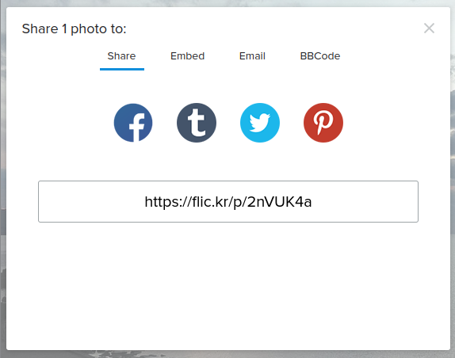

Flickr 短縮 URL
Flickr 写真ページの URL を短縮 URL に変換したいなぁ，と思いついた。
たとえば
という写真を置いている Web ページの URL は
https://www.flickr.com/photos/spiegel/52462249619
となっている。 一般化すると
https://www.flickr.com/photos/{user-id}/{photo-id} - individual photo
Web Page URLs
という形式。 これを短縮 URL で表すには
https://flic.kr/p/{base58-photo-id}
Short URLs
とすればいのだが（つまり photo-id を Base58 で符号化する），この Base58 ってのが曲者で，どうやらアプリケーションによって微妙に実装が異なるらしい。
なんだよ，それ。
標準化されてるんじゃないのか orz
ちなみに Flickr 版 Base58 の仕様はこちら：
幸いなことに Flickr 版にも対応した Base58 パッケージを公開している人がおられた。
ありがたや 🙇
というわけで，簡単なサンプルコードを書いてみる。
package main
import (
"flag"
"fmt"
"net/url"
"os"
"strings"
"github.com/itchyny/base58-go"
)
func FlickrShortURL(s string) string {
u, err := url.Parse(s)
if err != nil {
return s
}
if !strings.HasSuffix(u.Hostname(), "flickr.com") {
return s
}
var photoId string
elms := strings.Split(strings.TrimSuffix(u.EscapedPath(), "/"), "/")[1:]
if len(elms) == 3 && strings.EqualFold(elms[0], "photos") {
photoId = elms[2]
}
if len(photoId) == 0 || !isDigitString(photoId) {
return s
}
b, err := base58.FlickrEncoding.Encode([]byte(photoId))
if err != nil {
return s
}
return "https://flic.kr/p/" + string(b)
}
func isDigitString(s string) bool {
return strings.IndexFunc(s, func(c rune) bool {
return c < '0' || '9' < c
}) < 0
}
func main() {
flag.Parse()
args := flag.Args()
if len(args) == 0 {
fmt.Fprintln(os.Stderr, os.ErrInvalid)
return
}
fmt.Println(FlickrShortURL(args[0]))
}
FlickrShortURL() が変換関数。
引数の URL 文字列を簡単にチェックして Flickr の写真ページの形式なら短縮 URL に変換して返している。
それ以外なら素通し。
これを実行すると
$ go run sample.go https://www.flickr.com/photos/spiegel/52462249619/
https://flic.kr/p/2nVUK4a
と出力される。 念のために検算しておこう。
件の写真ページにあるシェアボタン をクリックすると，以下のダイアログが表示される。
{kind=link}

ここに表示されている短縮 URL が先程のサンプルコードの実行結果と同じなら無問題。
よーし，うむうむ，よーし。
参考図書

- プログラミング言語Go (ADDISON-WESLEY PROFESSIONAL COMPUTING SERIES)
- Alan A.A. Donovan (著), Brian W. Kernighan (著), 柴田 芳樹 (翻訳)
- 丸善出版 2016-06-20
- 単行本（ソフトカバー）
- 4621300253 (ASIN), 9784621300251 (EAN), 4621300253 (ISBN)
- 評価
著者のひとりは（あの「バイブル」とも呼ばれる）通称 “K&R” の K のほうである。この本は Go 言語の教科書と言ってもいいだろう。と思ったら絶版状態らしい（2025-01 現在）。復刊を望む！

- 初めてのGo言語 ―他言語プログラマーのためのイディオマティックGo実践ガイド
- Jon Bodner (著), 武舎 広幸 (翻訳)
- オライリージャパン 2022-09-26
- 単行本（ソフトカバー）
- 4814400047 (ASIN), 9784814400041 (EAN), 4814400047 (ISBN)
- 評価
2021年に出た “Learning Go” の邦訳版。私は版元で PDF 版を購入。 Go 特有の語法（idiom）を切り口として Go の機能やパッケージを解説している。 Go 1.19 対応。